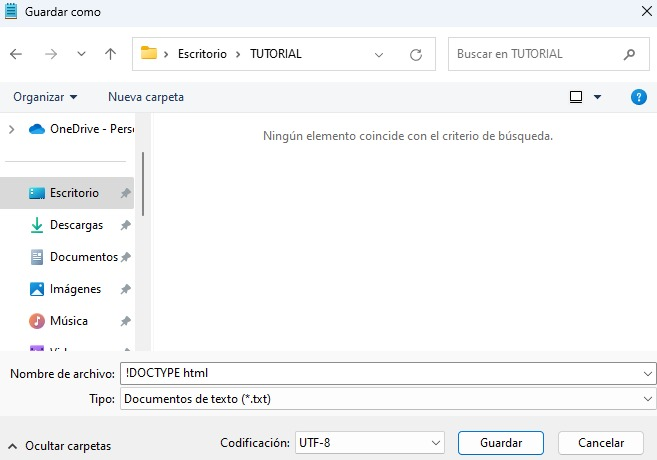

Un editor de texto simple es todo lo que necesitas para aprender HTML.
Aprende HTML con el Bloc de notas o TextEdit
Se pueden crear y modificar páginas web utilizando editores HTML profesionales. Sin embargo, para aprender HTML recomendamos un editor de texto simple como el Bloc de notas (PC) o TextEdit (Mac).
Paso 1: Abre el Bloc de notas (PC)
- Windows 8 o posterior: Abre la pantalla de Inicio (el símbolo de la ventana en la parte inferior izquierda de la pantalla). Escribe "Bloc de notas".
- Windows 7 o anterior: Abre Inicio > Programas > Accesorios > Bloc de notas.
Paso 1: Abre TextEdit (Mac)
- Abre Finder > Aplicaciones > TextEdit.
- También puedes cambiar algunas preferencias para que la aplicación guarde los archivos correctamente. En Preferencias > Formato > elige "Texto sin formato".
- Luego, en "Abrir y guardar", marca la casilla que dice "Mostrar archivos HTML como código HTML en lugar de texto formateado".
Paso 2: Escribe algo de HTML
Escribe o copia el siguiente código HTML en el Bloc de notas o TextEdit:

Paso 3: Guarda la página HTML
Guarda el archivo en tu computadora. Selecciona Archivo > Guardar como en el menú del Bloc de notas. Nombra el archivo "index.htm" y establece la codificación en UTF-8 (preferida para archivos HTML).
Paso 4: Ve la página HTML en tu navegador
Abre el archivo HTML guardado en tu navegador favorito (haz doble clic en el archivo o haz clic derecho y elige "Abrir con").